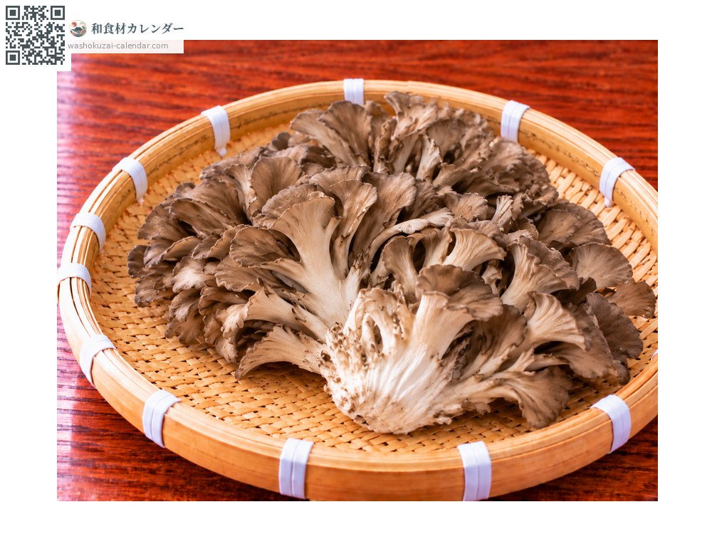
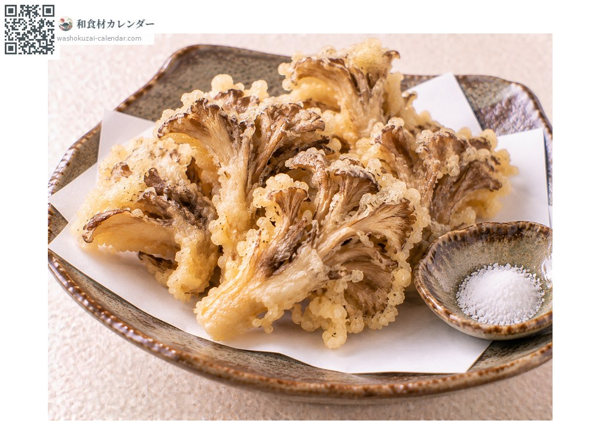
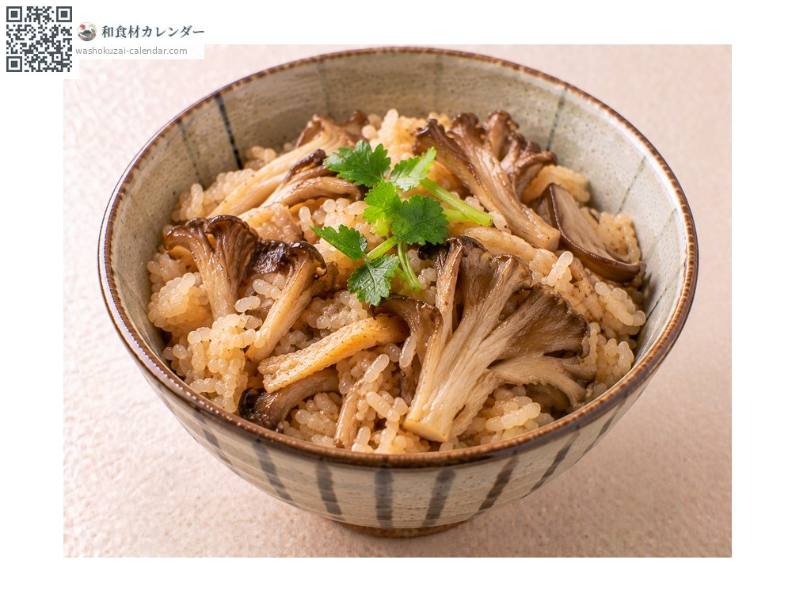
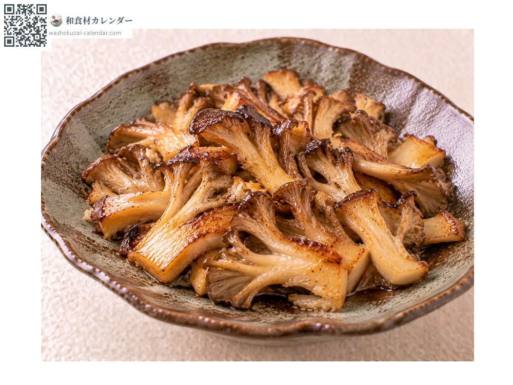
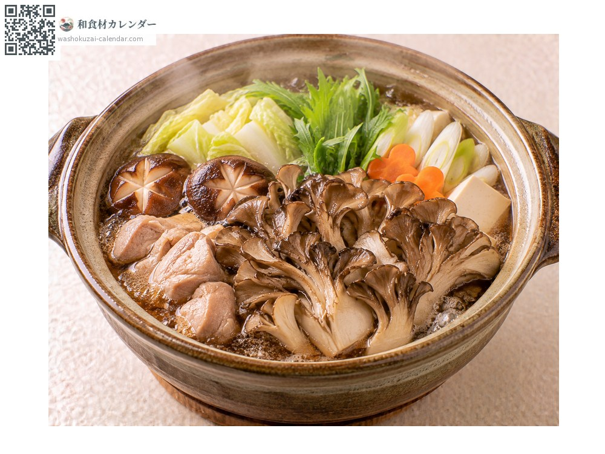

野菜
舞茸
まいたけ
別名・別表記マイタケ、maitake
旬は9月・10月

旬の時期
1月
2月
3月
4月
5月
6月
7月
8月
9月
10月
11月
12月
旬出回り
調理法

天ぷら
裂いて揚げる。香りが立ち、食感も良い。

炊き込みご飯
米と炊く。香りと出汁が米に移る。

バター炒め
強火で手早く炒める。醤油を少し垂らす。

鍋物
出汁がよく出る。茶碗蒸しには入れない。
選び方
傘が肉厚で濃い褐色のもの。株がしっかりして軸が白いもの。
保存方法
洗わずに紙で包み冷蔵。裂いて小分けにし、冷凍もできる。
主な産地
豆知識
見つけると舞い上がるほど嬉しいことが名の由来とされる。天然物は稀少で、かつては同じ重さの銀と交換されたという話も残る。タンパク質を分解する酵素を含むため、茶碗蒸しに入れると卵が固まらない。